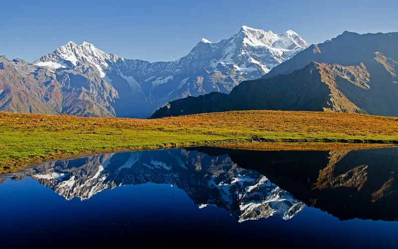
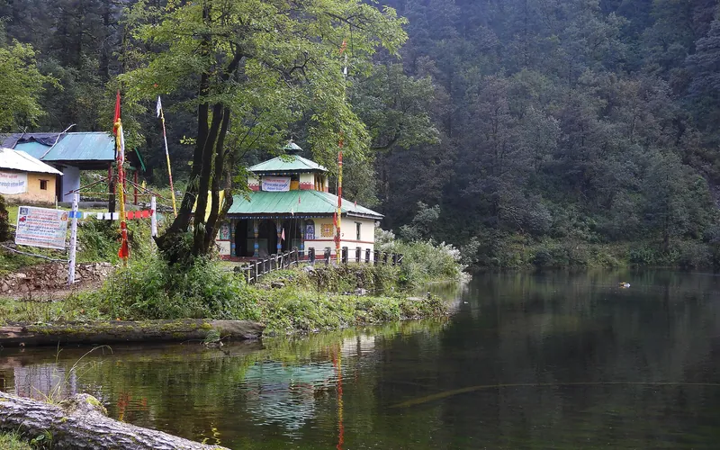
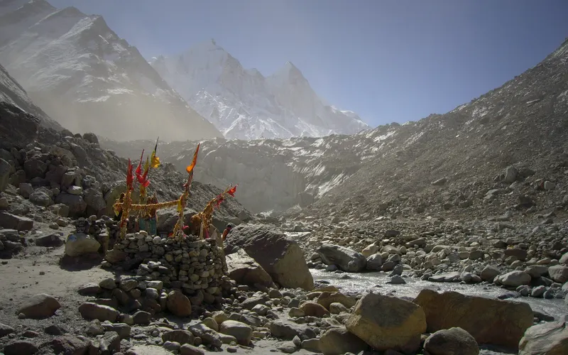
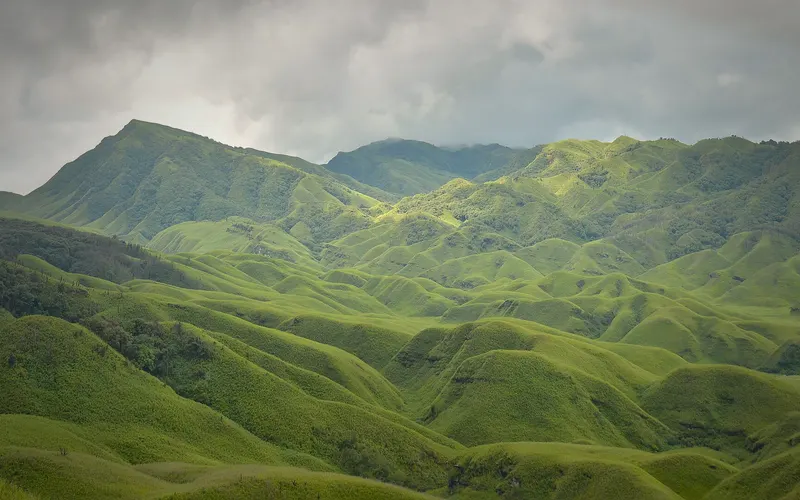

At their best in June
The months each trek's sources call the best.
| Trek | Highest point | Days on trail | Difficulty | Best months |
|---|---|---|---|---|
| Triund | 2,875 m | 2 | Easy | Mar–Jun, Sep–Nov |
| Prashar Lake | 2,730 m | 2 | Easy | Apr–Jun, Sep–Nov |
| Rajmachi | 826 m | 2 | Easy | Jun–Sep, Nov–Mar |
| Beas Kund | 3,700 m | 3 | Easy | Jun, Sep–Oct |
| Kareri Lake | 2,934 m | 3 | Easy | May–Jun, Sep–Nov |
| Bhrigu Lake | 4,300 m | 4 | Easy | May–Jun, Sep–Oct |
| Ali–Bedni Bugyal | 3,803 m | 6 | Easy | May–Jun, Sep–Nov |
| Phulara Ridge | 3,700 m | 6 | Easy | May–Jun, Sep–Oct |
| Kheerganga | 2,960 m | 1 | Easy–moderate | Apr–Jun, Sep–Oct |
| Madmaheshwar | 3,497 m | 4 | Easy–moderate | May–Jun, Sep–Oct |
| Panchachuli Base | – | 6 | Easy–moderate | May–Jun, Oct |
| Kudremukh | 1,892 m | 3 | Moderate | Jun–Aug, Nov–Feb |
| Indrahar Pass | 4,342 m | 4 | Moderate | May–Jun, Sep–Oct |
| Hampta Pass | 4,200 m | 5 | Moderate | Jun–Oct |
| Sar Pass | 4,223 m | 5 | Moderate | May–Jun |
| Dodital | 4,150 m | 6 | Moderate | Apr–Jun, Oct–Dec |
| Gaumukh Tapovan | 4,460 m | 8 | Moderate | Apr–Jun, Sep–Oct |
| Kafni Glacier | 3,895 m | 8 | Moderate | May–Jun, Sep–Oct |
| Kedartal | 4,750 m | 7 | Moderate–hard | May–Jun, Sep–Oct |
| Roopkund | 5,029 m | 8 | Moderate–hard | May–Jun, Sep–Oct |
| Rupin Pass | 4,650 m | 8 | Moderate–hard | May–Jun, Sep–Oct |
| Buran Ghati | 4,575 m | 8 | Moderate–hard | May–Jun, Sep–Oct |
| Satopanth Tal | 4,346 m | 8 | Moderate–hard | May–Jun, Sep–Oct |
| Bali Pass | 4,950 m | 8 | Hard | May–Jun, Sep–Oct |
| Bailey Trail (Tawang) | 4,980 m | 10 | Hard | Apr–Jun, Sep–Oct |
| Pin Parvati Pass | 5,319 m | 12 | Hard | Jun–Sep |

Easy · 2 daysPhoto: Ashish Gupta from Noida, India, CC BY 2.0
Triund
▲ 2,875 m · Best Mar–Jun, Sep–Nov
Easy · 2 daysPhoto: Casonideepika, CC BY-SA 4.0
Prashar Lake
▲ 2,730 m · Best Apr–Jun, Sep–Nov
Easy · 2 daysPhoto: Mukundvg1942, CC BY-SA 4.0
Rajmachi
▲ 826 m · Best Jun–Sep, Nov–Mar
Easy · 3 daysPhoto: Gaurav Dhingra, CC BY-SA 4.0
Beas Kund
▲ 3,700 m · Best Jun, Sep–Oct
Easy · 3 daysPhoto: Meerah Dhiman, CC BY 4.0
Kareri Lake
▲ 2,934 m · Best May–Jun, Sep–Nov
Easy · 4 daysPhoto: Vishalwiki2606, CC BY-SA 4.0
Bhrigu Lake
▲ 4,300 m · Best May–Jun, Sep–Oct
Easy · 6 daysPhoto: Shaswat Nimesh, CC BY-SA 4.0
Ali–Bedni Bugyal
▲ 3,803 m · Best May–Jun, Sep–Nov
Easy · 6 daysPhoto: Pathaharapathik, CC BY-SA 4.0
Phulara Ridge
▲ 3,700 m · Best May–Jun, Sep–Oct
Easy–moderate · 1 dayPhoto: Photos Worldwide, CC0
Kheerganga
▲ 2,960 m · Best Apr–Jun, Sep–Oct
Easy–moderate · 4 daysPhoto: Abhishek.ghosh1984, CC BY-SA 4.0
Madmaheshwar
▲ 3,497 m · Best May–Jun, Sep–Oct
Easy–moderate · 6 daysPhoto: Arjunhaarith16, CC BY-SA 4.0
Panchachuli Base
Best May–Jun, Oct
Moderate · 3 daysPhoto: Dhruvaraj S from India, CC BY 2.0
Kudremukh
▲ 1,892 m · Best Jun–Aug, Nov–Feb
Moderate · 4 daysPhoto: Ashish Gupta from Noida, India, CC BY 2.0
Indrahar Pass
▲ 4,342 m · Best May–Jun, Sep–Oct
Moderate · 5 daysPhoto: Adarsh Patel, CC BY-SA 4.0
Hampta Pass
▲ 4,200 m · Best Jun–Oct
Moderate · 5 daysPhoto: balu, CC BY 4.0
Sar Pass
▲ 4,223 m · Best May–Jun
Moderate · 6 daysPhoto: Sumita Roy Dutta, CC BY-SA 4.0
Dodital
▲ 4,150 m · Best Apr–Jun, Oct–Dec
Moderate · 8 daysPhoto: Atarax42, CC BY-SA 3.0
Gaumukh Tapovan
▲ 4,460 m · Best Apr–Jun, Sep–Oct
Moderate · 8 daysPhoto: Anuragkjain at English Wikipedia, CC BY 3.0
Kafni Glacier
▲ 3,895 m · Best May–Jun, Sep–Oct
Moderate–hard · 7 daysPhoto: Kailas98, CC BY-SA 3.0
Kedartal
▲ 4,750 m · Best May–Jun, Sep–Oct
Moderate–hard · 8 daysPhoto: Neha iitb, CC BY-SA 4.0
Roopkund
▲ 5,029 m · Best May–Jun, Sep–Oct
Moderate–hard · 8 daysPhoto: Nikitaparwani, CC BY-SA 4.0
Rupin Pass
▲ 4,650 m · Best May–Jun, Sep–Oct
Moderate–hard · 8 daysPhoto: Bharatkaistha, CC BY-SA 4.0
Buran Ghati
▲ 4,575 m · Best May–Jun, Sep–Oct
Moderate–hard · 8 daysPhoto: Photos Worldwide, CC0
Satopanth Tal
▲ 4,346 m · Best May–Jun, Sep–Oct
Hard · 8 daysPhoto: Paul Hamilton, CC BY-SA 2.0
Bali Pass
▲ 4,950 m · Best May–Jun, Sep–Oct
Hard · 10 daysPhoto: Kingshuk Mondal, CC BY-SA 4.0
Bailey Trail (Tawang)
▲ 4,980 m · Best Apr–Jun, Sep–Oct
Hard · 12 daysPhoto: Bharatkaistha, CC BY-SA 4.0
Pin Parvati Pass
▲ 5,319 m · Best Jun–SepAlso possible in June
Doable, but not the peak season: expect snow, rain or heat, as each trek page explains.

Easy · 2 daysPhoto: Mvkulkarni23, CC BY-SA 3.0
Kalsubai
▲ 1,646 m · Best Oct–Mar
Easy · 2 daysPhoto: Tokendra, CC BY-SA 4.0
Harishchandragad
▲ 1,422 m · Best Jul–Sep
Easy · 2 daysPhoto: Arshiya Urveeja Bose, CC BY 2.0
David Scott Trail
▲ 1,829 m · Best Oct–Apr
Easy · 5 daysPhoto: Mike Prince from Bangalore, India, CC BY 2.0
Dayara Bugyal
▲ 3,750 m · Best Dec–Mar
Easy · 7 daysPhoto: Metanish, CC BY-SA 4.0
Har Ki Dun
▲ 3,566 m · Best Sep–Dec
Easy–moderate · 2 daysPhoto: Tokendra, CC BY-SA 4.0
Rajgad to Torna
▲ 1,403 m · Best Sep–Feb
Easy–moderate · 5 daysPhoto: Irfanaru, CC BY-SA 3.0
Kolahoi Glacier
▲ 3,850 m · Best Jul–Sep
Moderate · 2 daysPhoto: Original: Samudra Bikash Hazarika Derivative work: UnpetitproleX, CC BY-SA 4.0
Dzükou Valley
▲ 2,452 m · Best Oct, Mar–Apr
Moderate · 7 daysPhoto: AdilAru, CC BY-SA 3.0
Tarsar Marsar
▲ 4,024 m · Best Jul–Aug
Moderate · 8 daysPhoto: Harshit SR, CC BY-SA 4.0
Pindari Glacier
▲ 3,660 m · Best Apr–May, Sep–Oct
Moderate–hard · 5 daysPhoto: SlartibErtfass der bertige, CC BY-SA 3.0
Markha Valley
▲ 5,260 m · Best Jul–Aug
Moderate–hard · 12 daysPhoto: Carsten.nebel, CC BY-SA 3.0
Green Lake
▲ 4,935 m · Best Apr–May, Oct–Nov
Hard · 7 daysPhoto: Ingo Mehling, CC BY-SA 3.0
Rumtse to Tso Moriri
▲ 5,435 m · Best Jul–Aug
Not graded · 5 daysPhoto: Rahul upreti, CC BY-SA 4.0
Chopta Chandrashila
▲ 3,700 m · Best Mar–AprQuestions
Which are the best treks in June?
The Treqz atlas lists Triund, Prashar Lake, Rajmachi, Beas Kund, Kareri Lake, Bhrigu Lake and 20 more.
Which is the easiest of the best treks in June?
Triund: graded Easy, 2 days on the trail.
Which is the highest of the best treks in June?
Pin Parvati Pass, with a highest point of 5,319 m.
Which is the shortest of the best treks in June?
Kheerganga: 1 day on the trail.
Best monthsAlso possibleSeasons come from each trek's cited sources.
See all 59 treks →